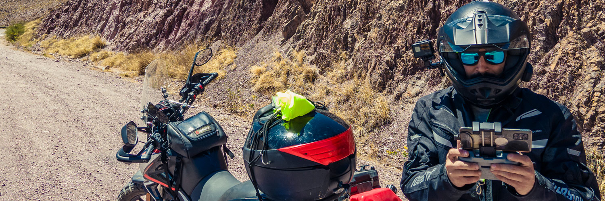

Este soy yo
Soy Fede EME es solo el nombre que se me ocurrió ponerle a esta página en la que
quiero
compartir con todos ustedes mis viajes y experiencias. Mi nombre es Federico, un rosarino de 38 años que
nunca
deja de buscar cosas para salir del aburrimiento de la rutina de 8 horas de oficina diaria.
Me gusta el
ciclismo
de montaña, la fotografía, la escalada deportiva y los viajes. Hace dos año atrás, la pandemia me hizo
reflexionar sobre lo que nos estábamos perdiendo de vivir y la libertad que no disfrutábamos cuando todo
era
normal, tal vez por comodidad, tal vez por miedo. Así que dije, porqué no me compro una moto y apenas
pueda me
voy de viaje solo al norte de Argentina.
Ese pensamiento incluía al menos dos acciones que me sacaban totalmente de mi zona de confort, viajar
solo y
andar en moto. Andar en moto cuando se viene de una familia en la que nadie tuvo una te transforma
automáticamente
en un loco.
Lo que no les conté hasta ahora, es que a este loco, cuando se le pone una idea en la
cabeza, no hay
menera de sacársela. Así que me compré la moto, aprendí a manejar, cargué el equipaje y me fui a mi
primer
viaje, un viaje de 16 días y más de 4000Kms por el norte argentino. Desde ese momento caí en el vicio
que muchos
me habían advertido, la libertad que te da la moto, una vez que se prueba, no tiene vuelta atrás.
En
esta página
te voy a compartir las fotos, los videos y las experiencias que vaya recolectando con el paso de los
kilómetros.
